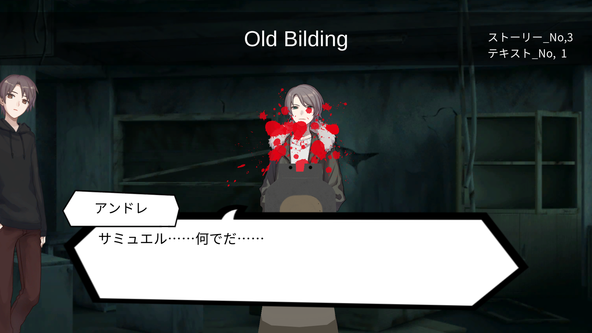

すうじあてげーむ
相手の手札を推理しよう！！
それぞれに配られた手札をお互いに推理しよう！！
ヒントの残り山札は１ターンに３枚までめくれるぞ！！
ただし、相手にとってもヒントになってしまうので注意
リスクとリターンを状況に合わせてうまく利用しよう！！


・使った技術
デッキの配列 オブジェクトの生成 非同期処理 オブジェクトの振動 敵の挙動・制作を振り返って
今作を作るにあたっての当初の目標は「ゲームらしいゲームをつくる」だった。その為、アイディアのもととして、遊びの根本と言えるトランプを取り入れた。
結果としてその目標は大いに達成できたと思う。
特に今作では、敵に残りカードの中から選ばせる必要があったり、デッキの管理であったり配列を上手に扱わなければならない場面が多かった。
また、CPUとのターン交代制であることから非同期処理を行う必要があり、それも新しい挑戦になった。
全体として、程よい難易度で取り組めたと思う。